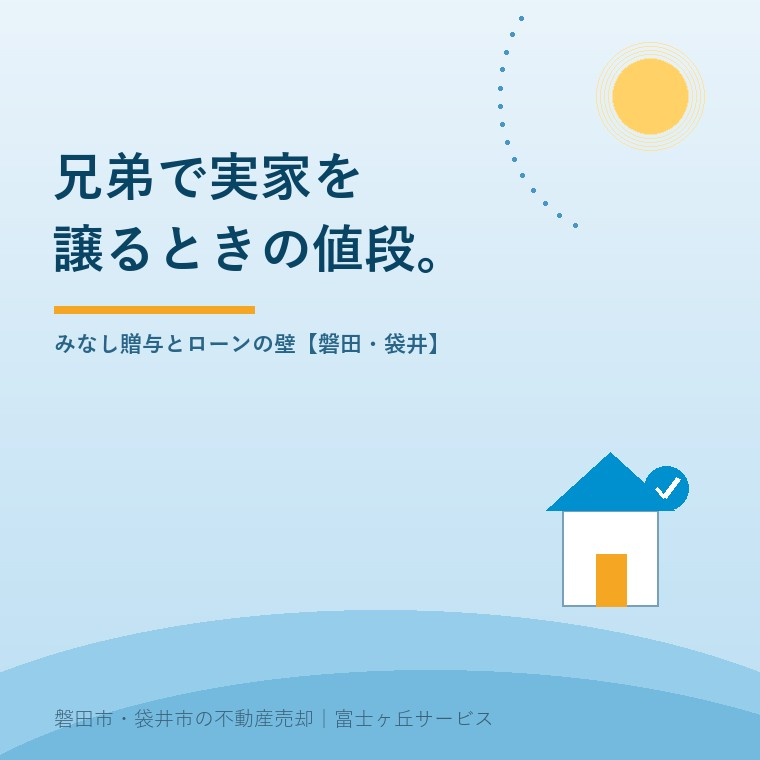

2026年8月8日｜カテゴリ：相続・しまい方／コスト・税・制度

この記事の要点
Q. お盆に兄弟で集まります。弟が実家に住みたいと言うので、安く譲ろうと思うのですが、いくらならいいのでしょうか。
A. まず「売買にしない道」から検討してください。実家の名義がまだ亡くなった親御さんのままなら、遺産分割（代償分割）で弟さんが取得し、他の兄弟へ現金を渡すほうが圧倒的に軽く済みます。相続による取得は不動産取得税が非課税、登録免許税も0.4％。売買にすると不動産取得税3％＋登録免許税2％がかかり、諸費用が8倍近くになることも珍しくありません。すでに名義が兄弟の誰かにある場合は売買になりますが、そのときの価格の目安は時価の8割程度。相続税法7条のみなし贈与を避けるためで、平成19年8月23日の東京地裁判決がその考え方の根拠になっています。そして兄弟間の贈与は「一般税率」。900万円分を安くすると贈与税は約191万円です。さらに銀行は親族間売買を嫌いますが、フラット35は条件を満たせば兄弟姉妹間の売買も対象になり得ます。磐田市・袋井市では、介護施設の運営から不動産事業を始めた富士ヶ丘サービスのような「介護×不動産」専門の会社に相談するという選択肢があります。
お盆に兄弟が顔を揃えると、実家の話が出ます。「俺が住んでもいいよ」「じゃあ他の兄弟にはいくらか払わないとな」──ここまでは、たいていうまくいきます。
崩れるのは、その次です。「いくら払うか」の根拠が誰にも分からない。安すぎれば他の兄弟が不満を持ち、税務署からも指摘される。高すぎれば住む側が払えない。しかも銀行に相談したら「親族間の売買はちょっと」と断られた──。
今日は、この一連の壁を順番に外していきます。順番を間違えなければ、コストは何分の一にもなります。
ここを取り違えると、払わなくていい税金を何十万円も払うことになります。判定はとても簡単です。
| 実家の現在の名義 | 取るべき道 |
|---|---|
| 亡くなった親のまま（相続登記が未了） | 遺産分割。弟さんが実家を取得し、他の兄弟へ現金（代償金）を渡す＝代償分割 |
| 兄弟の共有になっている（すでに相続登記済み） | 他の兄弟の持分の売買（または贈与） |
| 親が存命で親の名義 | 売買・贈与・使用貸借のいずれか。相続時精算課税の検討も |
いちばん多いのが1行目、まだ親御さんの名義のままというケースです。この場合、慌てて「兄から弟へ売買」などする必要はまったくありません。
固定資産税評価額が土地800万円・建物200万円（合計1,000万円）の実家で比べてみます。
| 費目 | 遺産分割（代償分割） | 兄弟間の売買 |
|---|---|---|
| 登録免許税 | 相続 0.4％ 4万円 | 売買 本則2.0％（土地には軽減措置あり） 16万〜20万円 |
| 不動産取得税 | 非課税（地方税法73条の7） 0円 | 土地800万円×1/2×3％＝12万円 建物200万円×3％＝6万円 計18万円（住宅の控除が使えれば減る） |
| 仲介手数料・契約印紙 | 0円 | 依頼すれば数十万円＋印紙代 |
| 合計の目安 | 約4万円 | 約34万円＋α |
不動産取得税は、令和9年3月31日までに取得した土地・住宅は税率3％（本則4％）、宅地評価土地は課税標準が2分の1に軽減されます。中古住宅を自己の居住用として取得する場合は、新築時期に応じた控除が使える可能性がありますので、県税事務所への申告をお忘れなく。
差は8倍以上。それも、やることは同じ「弟が実家を持ち、他の兄弟がお金を受け取る」です。名義が親のままなら、遺産分割協議書を作るだけで済むのです。
ひとつ注意を。代償金は現金で払うのが原則です。代償として別の不動産（畑や貸家など）を渡すと、渡した側に譲渡所得課税が生じ得ます。ここは税理士に確認してください。
なお、相続登記は令和6年4月1日から義務化され、3年以内の申請が必要です。「話がまとまらないから放っておく」は、もう選べません。共有名義のまま置くリスクもあわせてご覧ください。
すでに名義が兄弟の共有になっている、あるいは親御さんが存命で名義を移したい。この場合は売買です。そして誰もが最初につまずくのが価格です。
相続税法7条は、著しく低い価額の対価で財産の譲渡を受けた場合、時価との差額に相当する金額を贈与により取得したものとみなすと定めています。これがみなし贈与です。
1,000万円の価値がある実家を100万円で譲れば、差額の900万円が贈与とみなされ、買った弟さんに贈与税がかかります。「身内なんだから」は通りません。
では「著しく低い」の線はどこか。法律に金額の基準は書かれていません。ここが実務を悩ませてきました。
広く引かれているのが平成19年8月23日の東京地裁判決です。この判決は、土地の譲渡について、相続税評価額と同水準またはそれ以上の価額で譲渡が行われた場合には、原則として「著しく低い価額」の対価による譲渡とはいえないと判示しました。相続税評価額はおおむね時価の80％水準に設定されており、80％という割合は社会通念上、著しく低いとはみられていないという考え方です。
ここから、実務では「市場価格の8割程度なら、みなし贈与を指摘されるリスクは低い」という目安が定着しました。ただし、はっきり申し上げておきます。
ですから私たちは、親族間売買のご相談では必ず複数社の査定書を取り、価格の根拠を書面で残すことをお勧めしています。金額が大きい場合は不動産鑑定士の鑑定評価書を取る価値があります。数十万円かかりますが、贈与税の追徴に比べれば安い保険です。実家には4つの値段があるの回で書いたとおり、「時価」は一つではありません。だからこそ、根拠が要るのです。
もし、みなし贈与と判定されたらいくらかかるのか。ここで多くの方が誤算をします。
贈与税には特例税率と一般税率があり、特例税率（軽いほう）が使えるのは直系尊属（父母・祖父母）から18歳以上の子や孫への贈与に限られます。兄弟姉妹の間の贈与は、一般税率です。
先ほどの例で計算してみます。差額900万円がみなし贈与とされた場合──
| 計算 | 金額 |
|---|---|
| みなし贈与額 | 900万円 |
| 基礎控除 | ▲110万円 |
| 課税価格 | 790万円 |
| 一般税率（600万円超1,000万円以下＝40％・控除額125万円） | 790万円×40％－125万円 |
| 贈与税額 | 191万円 |
191万円です。「安く譲って喜んでもらおう」としたことが、弟さんに191万円の納税義務を作る。しかも贈与税は、財産をもらった側が払います。現金で家を買えないから安くしてもらったのに、現金で191万円払えと言われる。この順序の悪さが、親族間売買の最大の落とし穴です。
価格が決まっても、次は資金です。「弟が住宅ローンを組んで、その資金で兄に支払う」──もっとも自然な形ですが、これが通りません。
ですから、多くの都市銀行・地方銀行は親族間売買を「原則お断り」としています。断られたことは、あなたの信用の問題ではありません。類型として避けられているだけです。
ここは意外と知られていません。住宅金融支援機構のフラット35は、公式のQ&Aで次のように示しています。
実家じまいの場面に引き直すと、こうなります。弟さんがまだ実家に住んでいない（自分の家や賃貸から移ってくる）なら、兄弟間売買でもフラット35を検討できる。逆に、すでに実家に無償で住んでいる（使用貸借）状態から名義だけ買い取る形は、対象外になります。
「先に住んでしまうと、ローンが組めなくなる」。順番が結果を変える典型例です。実際の取扱いは金融機関ごとに異なりますので、動く前に取扱金融機関へ確認してください。
ローンが組めたとして、住宅ローン控除（住宅借入金等特別控除）が使えるかは別問題です。適用要件には、取得の時およびその後も引き続き生計を一にする親族や、特別の関係がある者からの取得でないことが定められています。
読み方の要点は「生計を一にする」です。単に同居しているかどうかだけでなく、仕送りをしているような関係も含まれます。
ここは判断が微妙です。控除額は最大で年数十万円×十数年。売買契約を結ぶ前に、税務署か税理士に「この関係で適用されるか」を確認してください。契約後では取り返しがつきません。
買う側だけでなく、売る側の税金も見ておきます。
マイホームを売ったときの3,000万円の特別控除は、譲渡所得から3,000万円を差し引ける強力な特例です。しかしこの特例には、売手と買手が特別な関係でないことという要件があります。国税庁が挙げる「特別な関係」は次のとおりです。
ここで重要なのは、兄弟姉妹は「直系血族」ではないということです。ですから、生計が別で、売った後にその家で同居もしないのであれば、兄弟への売却でも3,000万円控除が使える可能性があります。
ただし現実には、もうひとつのハードルがあります。この特例は自分が住んでいた家を売る場合のものです。実家を出て何十年という兄が売る場合は、そもそも「マイホーム」に当たりません（住まなくなってから3年を経過する日の属する年の12月31日までなら対象になり得ます）。
また、親から相続した空き家を売るときの相続空き家の3,000万円特別控除にも特別関係者への譲渡を除く要件があり、そのうえ買主が耐震改修するか、建物を取り壊すことなどが求められます。弟さんがそのまま住むなら、この特例は使えません。
つまり、兄弟間売買では売主側の特例も期待しにくい。だからこそ、冒頭で申し上げた「そもそも売買にしない（遺産分割で解決する）」が効いてくるのです。手取りで考える実家の売却の考え方は、身内の間でも同じです。
この地域では今も、「実家は長男が継ぐ」という前提が、口に出さないところで生きています。ご葬儀の席順、お墓の管理、お寺との付き合い。そうした祭祀の承継と、不動産の名義が、当たり前のように一体で語られます。
ところが法律は分けて考えます。祭祀承継者になることと、実家の名義を取ることは別の話です。そして相続分は兄弟で等しい。ここに、静かなズレが生まれます。
「長男が家と墓を守るのだから、実家は長男が無償でもらって当然」という空気の中で、他の兄弟が黙る。数年後、その黙っていた兄弟の配偶者やお子さんから話が蒸し返される──私たちが実際に見てきた光景です。
だから、金額を決めて、書面にする。安くても構いません。無償でも構いません。大事なのは、いくらの価値のものを、いくらで、なぜそうしたのかを記録に残すことです。遺産分割協議書でも、売買契約書でも構いません。紙にしてしまえば、10年後の家族を守ります。
もうひとつ、この地域ならではの論点があります。実家の敷地に畑や田が付いている場合です。農地を兄弟間で売買・贈与するには、原則として農業委員会の許可（農地法3条）が必要で、取得する側に営農要件が課されます。「宅地と一緒に弟へ」というわけにはいかないことがあるのです。田畑・山林の相続の回もご参照ください。なお、相続による農地の取得は許可ではなく届出で足ります。ここでも「相続のほうが軽い」のです。
富士ヶ丘サービスは磐田市見付で介護施設を運営するところから不動産事業を始めました。ですから、ご兄弟が集まる場に立ち会うことが多くあります。私たちの役割は、値段を決めることではありません。「その値段には、こういう根拠があります」とご家族全員に同じ説明をすることです。同じ説明を全員が聞いている。それだけで、後の揉め事はぐっと減ります。
2026年のお盆は8月13日（木）〜16日（日）。13日と14日は平日で、法務局も市役所も通常どおり開いています。
境界や測量の段取りはお盆の境界立会い、権利証が見つからないときはこちらの回にまとめてあります。三日間は短いようで、驚くほど多くのことが片づきます。
兄弟の間でお金の話をするのは、気が重いものです。けれど、話さないまま名義だけが動くほうが、ずっと危うい。金額を決めることは、争いの種ではなく、争いを防ぐ道具です。今年のお盆、どうか一度だけ、テーブルに出してみてください。
ふじがおか実家カルテ｜兄弟で見る、同じ1枚を
「いくらの家か」を、家族全員に同じ説明で。
ご住所をいただければ、現在の名義・相続の状況・市場価格の幅・固定資産税評価額・相続と売買の諸費用比較を1枚にまとめてお渡しします。ご兄弟それぞれにお送りすることもできます。売却をお決めでなくても構いません。数字を共有するところから始めましょう。
本記事は2026年8月8日時点の公開情報に基づく一般的な解説です。税率・軽減措置の適用期限は改正により変わります。みなし贈与の「著しく低い価額」は法令に金額基準がなく、時価の8割という目安は裁判例から導かれた実務上の考え方にすぎません。個別の事案では否認される可能性があります。住宅ローン控除・3,000万円特別控除の適用可否、贈与税額の計算は必ず税理士または所轄税務署にご確認ください。融資の可否は各金融機関の判断によります。登記手続は司法書士、農地の許可・届出は農業委員会、法的な紛争は弁護士にご相談ください。個別のご相談は当社までどうぞ。
磐田市・袋井市の実家じまい・相続空き家相談
固定資産税通知書だけでも相談できます
住所があいまいでも、通知書や写真から名義・道路・農地・残置物の確認順を整理します。カルテ申込またはLINEで状況を送ってください。
富士ヶ丘サービス株式会社／静岡県磐田市見付5789番地1／TEL:0538-31-3308／静岡県知事 (2) 第14083号／代表取締役・宅地建物取引士 大石 浩之